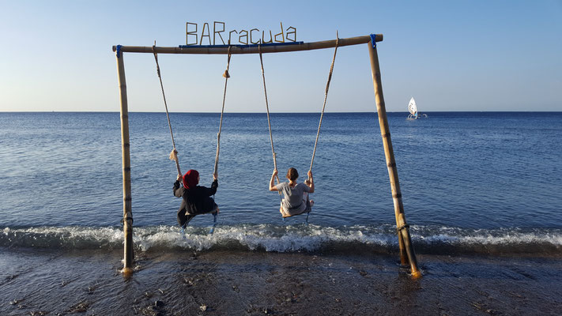

Herzlich Willkommen bei Loving Fernweh! Hier kannst du meine Reisen, sowie meine Leidenschaften finden. Schau dich einfach um. Mit der Zeit wird der Blog immer weiter wachsen, in Abhängigkeit davon, was ich erlebe. Ich freue mich dir unsere wunderschöne Welt zeigen zu können. Wenn du Fragen oder Anregungen hast, wende dich natürlich immer gerne an mich. Bis dahin wünsche ich dir viel Spaß beim Lesen und beim Reisen!
Lots of Love, deine Lynn
Welcome to Loving Ferweh! On this blog you can follow my travels and passions. Just take a look around. At the moment most articles are just in German but now, in Portugal, I started to always add an english translation. With time this site will grow with new articles and memories, so feel welcome to take a look around. If you have any questions, feel free to ask: Until then I wish you fun reading and travelling!
Lots of Love, Lynn